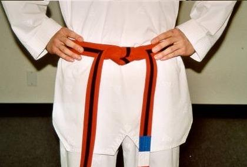

跆拳道要带系法是有着一定的讲究的，因为只要稍不注意，没有系好的话，那就是不恭敬的表现，显得非常的不礼貌，因此跆拳道腰带一定要用正确的方法系带。跆拳道腰带系法图解，喜欢跆拳道的朋友，对于跆拳道的腰带应该怎么系这一问题，现在一一为大家推荐跆拳道腰带系法图解，希望对大家有所帮助哦!
跆拳道腰带系法步骤：
跆拳道腰带系法1、选择长度适宜、符合自己技术等级的腰带，两端对齐折叠。
跆拳道腰带系法2、中间折叠部分用手指压一压，留下中点的折叠痕迹。中点对准髋骨横断线的腹前中点，大约肚脐部位，双手拇指在上，四指在下，掌心向里，顺着腰带向身后滑动，在身后重叠相压。
跆拳道腰带系骤3、右手持的在里，左手持的在外，双手交换腰带，向前滑行，右边腰带的一端往中点处，右手沿中点握住三层重叠的腰带，左手持外层腰带的一端，从下往里穿过三层腰带。
跆拳道腰带系法4、双手均匀用力拉至松紧适宜的程度，翻转下边的腰带一端，使之成为一个弯形。
跆拳道腰带系法5、左手持腰带的另一端从下往上往里穿过，双手交换，各持一端，用力一扯，整理打结处，使腰带优美的下垂。
下面来看一下真人演示的跆拳道腰带系法（如下图所示）：
①
②
③
④
⑤
